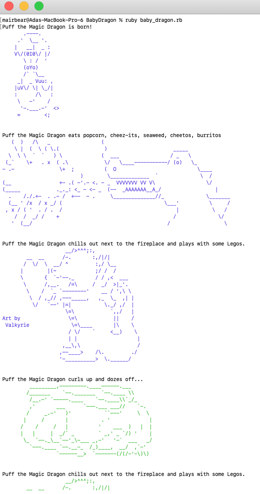

Slack CLI
Slack! Who doesn't love a good professional platform so you don't have to actually interact with coworkers in person...
Ummm, kidding, mostly...😅 I made my first Slack CLI project- this program is designed to interact with user from the command line (terminal). The program has two primary functions:
- To get information about a user/channel in Slack workspace
- Send message to a user/channel
Hotel
This is the first project I built from bottom to top. It is a system designed for Hotels to use for bookings. The primary functions of this program include:
- Allows to make a reservation given a date range
- Gives a list of all available rooms given a date range
- Lists all booking for a certain date
BabyDragon
This was a small and playful group project. It was created using Object Oriented Programming. Through running the program on the terminal, you will be introduced to Puff, our baby dragon, and will be taken on a journey as Puff eats, chills, plays, and finally eats you!! You can download the file yourself and play around with it to make Puff do as you desire.
